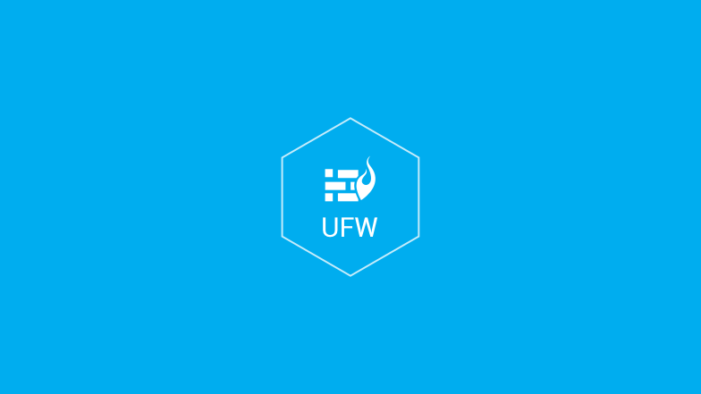

Настройка фаервола в Ubuntu с помощью утилиты UFW
9 октябрь 2016 г. 18:53

Введение
UFW (Uncomplicated Firewall - несложный фаервол) - удобный интерфейс для управления политиками безопасности межсетевого экрана. Наши серверы постоянно подвергаются различным атакам или сканируются в поиске уязвимостей. Как только эти уязвимости находятся, мы рискуем стать частью ботнета, раскрыть конфиденциальные данные или потерять деньги из-за сбоев в работе веб-приложений. Одной из первых мер по снижению рисков безопасности является грамотная настройка правил межсетевого экрана. В нашем руководстве мы рассмотрим основные команды и правила работы с утилитой UFW.
Предварительные требования
sudo apt-get install ufw
Проверка правил и текущего состояния UFW
В любое время вы можете проверить состояние UFW с помощью команды:
sudo ufw status verbose
По умолчанию UFW отключен, так что вы должны увидеть что-то вроде этого:
Status: inactive
Если UFW включен, то в консоли будут перечисляться заданные правила. Например, если firewall настроен таким образом - SSH (порт 22) соединение из любой точки мира, консоль может выглядеть следующим образом:
Status: active
Logging: on (low)
Default: deny (incoming), allow (outgoing), disabled (routed)
New profiles: skip
To Action From
-- ------ ----
22 ALLOW IN Anywhere
22 (v6) ALLOW IN Anywhere (v6)
Так вы всегда можете узнать как настроен фаервол.
Внимание! Проведите начальную настройку перед включением UFW. В частности, должен быть доступен SSH(22 порт). В ином случае вы рискуете потерять доступ к серверу.
Начальная настройка
По умолчанию UFW настройки запрещают все входящие соединения и разрешают все исходящие. Это значит, что если кто-то попытается достичь ваш сервер, он не сможет подключиться, в то время как любое приложение на сервере имеет доступ к внешним соединениям.
Cоответствующие правила фаервола прописываются так:
sudo ufw default deny incoming
sudo ufw default allow outgoing
Добавление правила для SSH-соединений
Чтобы разрешить входящие SSH-соединения, выполните команду:
sudo ufw allow ssh
SSH демон прослушивает 22 порт. UFW знает об именах распространенных служб (ssh, sftp, http, https), поэтому вы можете использовать их вместо номера порта.
Если ваш SSH-демон использует другой порт, вам необходимо указать его в явном виде, например:
sudo ufw allow 2222
Теперь, когда ваш межсетевой экран настроен, можете включать его.
Запуск UFW
Чтобы включить UFW, используйте следующую команду:
sudo ufw enable
Вы получите похожее предупреждение:
Command may disrupt existing ssh connections. Proceed with operation (y|n)?
Это означает, что запуск этого сервиса может разорвать текущее ssh соединение.
Но, так как мы его уже добавили ssh в правила, этого не произойдет. Поэтому просто нажмите (y).
Добавление правил для других подключений
Чтобы ваши приложения работали корректно, вам необходимо добавить другие правила. Ниже будут показаны настроить для наиболее распространённых служб.
HTTP (80 порт)
Для работы не зашифрованных веб-серверов используйте следующую команду:
sudo ufw allow http
Или
sudo ufw allow 80
HTTPS (443 порт)
То же самое, что и в предыдущем примере, но для зашифрованных соединений:
sudo ufw allow https
Или
sudo ufw allow 443
FTP (21 порт)
Данный порт используется для незашифрованной передачи файлов:
sudo ufw allow ftp
Или
sudo ufw allow 21/tcp
Добавление диапазонов портов
sudo ufw allow 3000:3100
Также вы можете указывать конкретный протокол:
sudo ufw allow 3000:3100/tcp
sudo ufw allow 3000:3100/udp
Добавление IP-адресов
Вs можете указать IP-адрес, которому будет разрешен доступ.
sudo ufw allow from 123.45.67.89
В приведённом примере указанному адресу разрешается доступ ко всем портам сервера.
Если же вы хотите указать доступ к конкретному порту, воспользуйтесь командой вида:
sudo ufw allow from 123.45.67.89 to any port 22
Аналогичным образом вы можете работать с диапазонами ip-адресов:
sudo ufw allow from 123.45.67.89/24
sudo ufw allow from 123.45.67.89/24 to any port 22
Ограничение подключений
Чтобы запретить HTTP-соединения, вы можете использовать следующую команду:
sudo ufw deny http
Если вы хотите запретить все соединения с 123.45.67.89, воспользуйтесь следующей командой:
sudo ufw deny from 123.45.67.89
Удаление правил
Существует два способа удаления правил. Первый - по номеру правила. Выполните команду:
sudo ufw status numbered
Status: active
To Action From
-- ------ ----
[ 1] 22 ALLOW IN Anywhere
[ 2] 80 ALLOW IN Anywhere
[ 3] 22 (v6) ALLOW IN Anywhere (v6)
[ 4] 80 (v6) ALLOW IN Anywhere (v6)
После этого выполните команду ufw delete и укажите номер правила, которое следует удалить:
sudo ufw delete 2
Второй способ заключается в том, что после команды ufw delete используется фактическое правило, например
sudo ufw delete allow http
или
sudo ufw delete allow 80
Отключение UFW
Отключить UFW можно при помощи команды:
sudo ufw disable
В результате её выполнения всё созданные ранее правила утратят силу.
Сброс правил
Если вам требуется сбросить текущие настройки, воспользуйтесь командой:
sudo ufw reset
В результате её выполнения все правила будут отключены и удалены.
Логи
В Ufw есть опция сохранения логов - журнал событий. Для запуска, используйте команду:
sudo ufw logging on
Ufw поддерживает нескоько уровней логгирования:
Что бы задать уровень, укажите его как параметр:
sudo ufw logging high
По-умолчанию используется уровень low.
Для просмотра файлов относящихся с логам ufw, используйте команду:
ls /var/log/ufw*
Заключение
Теперь ваш фаервол имеет минимально необходимые настройки для дальнейшей работы. Далее удостоверьтесь, что все подключения используемые вашим веб-приложением также разрешены и заблокируйте те, в которых нет необходимости. Это снизит риски проникновения на ваш сервер и совершения хакерами вредоносных действий.
2
Комментарии
Комментариев: 3
Сортировка
TimO_n16 октябрь 2016 г. 07:23
Советую в первых минутах работы с фаерволом включить логирование:
ufw logging on
Если в логах (/var/log/ufw.log) ваших конектов не видно, не забдьте выключить логирование. Иначе, в случае дудоса, ufw изнасилует ваши диски =)
Так же, на мой взгляд, правильным будет выставить лимит подключений на порт ssh:
ufw limit 22/tcp
3
Александр Джуринский25 октябрь 2016 г. 18:32 (Изменен 2 года назад)
Упустили важный момент - необходимо учитывать, что по умолчанию правила добавляются в конец списка IPTABLES и применяются они к пакету сверху вниз по списку. Отсюда надо понимать, что если у вас есть список правил к примеру:
To Action From
-- ------ ----
[ 1] 22 ALLOW IN Anywhere
[ 2] 80 ALLOW IN Anywhere
и вы блокируете IP командой:
sudo ufw deny from 123.45.67.89
To Action From
-- ------ ----
[ 1] 22 ALLOW IN Anywhere
[ 2] 80 ALLOW IN Anywhere
[ 3] Anywhere DENY IN 123.45.67.89
то правило будет добавлено в конец списка и заблокированный IP будет продолжать иметь доступ к 22/80 портам.
Правильнее будет добавлять в начало списка командой:
sudo ufw insert 1 deny from 123.45.67.89
To Action From
-- ------ ----
[ 1] Anywhere DENY IN 123.45.67.89
[ 2] 22 ALLOW IN Anywhere
[ 3] 80 ALLOW IN Anywhere
�